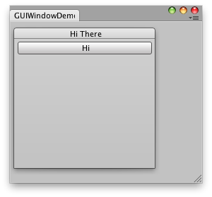
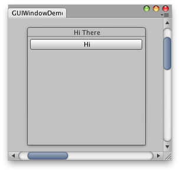

EditorWindow.BeginWindows
Description 描述
Mark the beginning area of all popup windows.
GUI.Window behaves somewhat differently in the editor than inside your games. In games, GUI.Window pops up a window on your screen. In the editor,
GUI.Window shows a subwindow inside one of your editor windows. Begin/EndWindows is used to determine where these can go.
You need to have all calls to GUI.Window or GUILayout.Window inside a BeginWindows / EndWindows pair. Like this:

Simple editor Window with a window and a button inside.
using UnityEditor; using UnityEngine; using System.Collections;
public class GUIWindowDemo : EditorWindow { // The position of the window public Rect windowRect = new Rect(100, 100, 200, 200); void OnGUI() { BeginWindows();
// All GUI.Window or GUILayout.Window must come inside here windowRect = GUILayout.Window(1, windowRect, DoWindow, "Hi There");
EndWindows(); }
// The window function. This works just like ingame GUI.Window void DoWindow(int unusedWindowID) { GUILayout.Button("Hi"); GUI.DragWindow(); }
// Add menu item to show this demo. [MenuItem("Test/GUIWindow Demo")] static void Init() { EditorWindow.GetWindow(typeof(GUIWindowDemo)); } }
The placement of the BeginWindows / EndWindows pair determines where popup windows will appear; all windows are clipped to the clipping area
defined by GUI.BeginGroup or GUI.BeginScrollView. A small example of that

Simple editor window with a window and a button inside using scroll bars.
using UnityEditor; using UnityEngine; using System.Collections;
public class GUIWindowDemo2 : EditorWindow { // The position of the window public Rect windowRect = new Rect(100, 100, 200, 200);
// Scroll position public Vector2 scrollPos = Vector2.zero;
void OnGUI() { // Set up a scroll view scrollPos = GUI.BeginScrollView(new Rect(0, 0, position.width, position.height), scrollPos, new Rect(0, 0, 1000, 1000));
// Same code as before - make a window. Only now, it's INSIDE the scrollview BeginWindows(); windowRect = GUILayout.Window(1, windowRect, DoWindow, "Hi There"); EndWindows(); // Close the scroll view GUI.EndScrollView(); }
void DoWindow(int unusedWindowID) { GUILayout.Button("Hi"); GUI.DragWindow(); }
[MenuItem("Test/GUIWindow Demo 2")] static void Init() { EditorWindow.GetWindow(typeof(GUIWindowDemo2)); } }